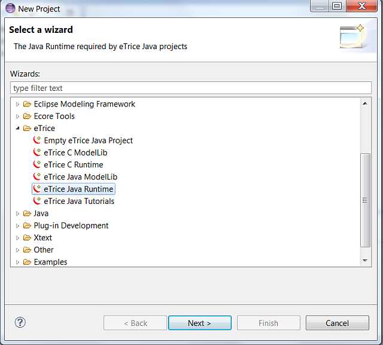
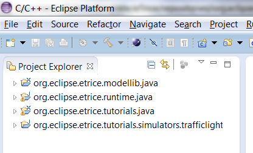
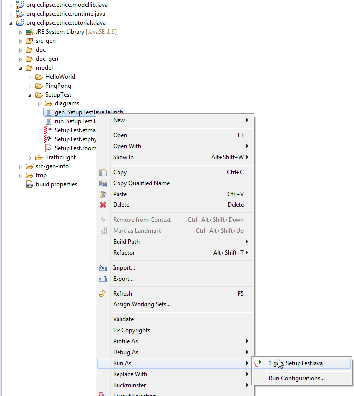
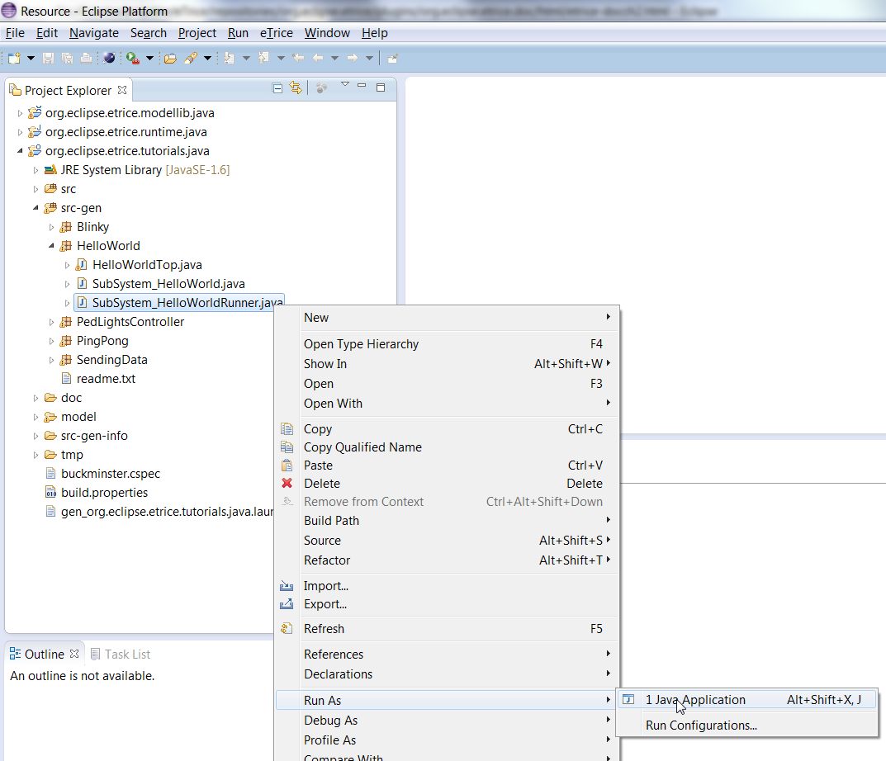
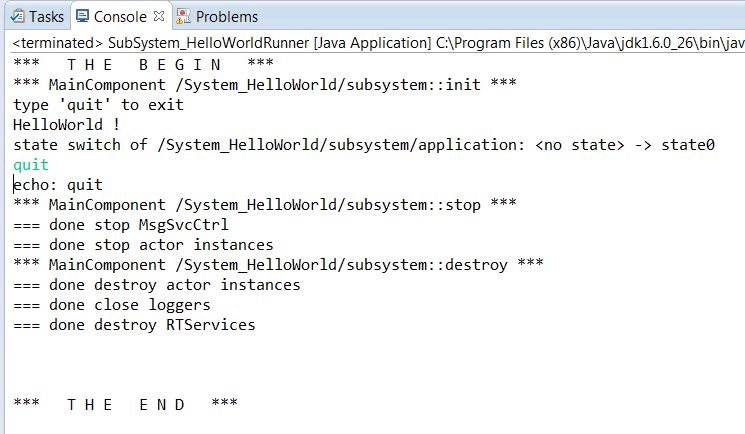

After installation of eclipse and the eTrice plug in, your workspace should look like this:
Just the eTrice menu item is visible of the installed eTrice plugins.
Select the menu File->New->Other

Open the eTrice tab and select eTrice Java Runtime
Press Next and Finish to install the Runtime into your workspace.

Do the same steps for eTrice Java Modellib and eTrice Java Tutorials. To avoid temporary error markers you should keep the proposed order of installation. The resulting workspace should look like this:

Now workspace is set up and you can perform the tutorials or start with your work.
The tutorial models are available in the org.eclipse.etrice.tutorials.java project. All tutorials are ready to generate and run without any changes. To start the code generator simply run gen_org.eclipse.etrice.tutorials.java.launch as gen_org.eclipse.etrice.tutorials.java:

The successful generation ends with Info: – finished code generation in the Console.

For each tutorial in the folder src-gen a java package is generated including a java file called SubSystem_<Modelname>Runner.java . To run the a generated application simply run this file as a java application:

To stop the application type quit in the console window.

Performing the tutorials will setup a dedicated project for each tutorial. Therefore there are some slight changes especially whenever a path must be set (e.g. to the model library) within your own projects. All this is described in the tutorials.